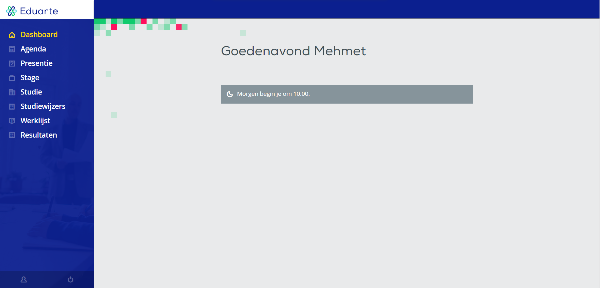
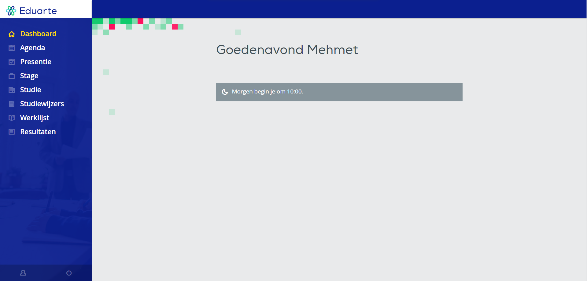

EduArte: Onderwijsadministratie en Leerbeheer op één Platform
Met de Eduarte app heeft de student alles bij de hand.
Met de Eduarte app voorzie je je studenten op een snelle en handige
manier via hun smartphones en tablets van informatie over: Aanwezigheid, Agenda/
lesrooster, inclusief lesdetails. Resultaten, inzien recente resultaten
en resultaten per vak.
Roosterbeheer:
EduArte vereenvoudigt het beheer van lesroosters, een cruciaal aspect van elk onderwijsinstituut.
Met deze functie kunnen scholen en universiteiten roosters creëren en aanpassen, rekening houdend
met vakken, docenten, klaslokalen en andere variabelen. Het systeem automatiseert planningstaken,
waardoor de kans op fouten aanzienlijk wordt verminderd. Leerlingen en docenten kunnen altijd toegang
hebben tot hun actuele roosters.
(Examen)Cijferbeheer:
Het bijhouden van cijfers en examenresultaten is een kritisch proces in het onderwijs. EduArte maakt dit
gemakkelijk met geïntegreerde tools om cijfers en prestatiegegevens op te slaan. Leraren kunnen cijfers
invoeren en bijwerken, terwijl studenten en hun ouders toegang hebben tot hun voortgangsrapporten.
Daarnaast kan het systeem automatisch rapporten genereren en overzichten bieden, waardoor het beheer
van academische prestaties aanzienlijk wordt vereenvoudigd.
Aanwezigheidsregistratie:
Het bijhouden van aanwezigheid is belangrijk voor de veiligheid en verantwoording binnen onderwijsinstellingen.
EduArte biedt hulpmiddelen om nauwkeurige aanwezigheidsgegevens te verzamelen en bij te houden. Dit systeem kan
de basis vormen voor het volgen van studenten en docenten en is cruciaal in noodgevallen.
Eduarte-App:
Het EduArte-platform biedt ook een mobiele app die studenten, docenten en ouders kunnen downloaden. Met de app hebben
gebruikers overal en altijd toegang tot relevante informatie. Hiermee kunnen studenten hun roosters inzien, (examen)cijfers
bijhouden en meldingen ontvangen. Docenten kunnen hun lesroosters en aanwezigheidsgegevens beheren, terwijl ouders de prestaties
van hun kinderen kunnen volgen en op de hoogte blijven van belangrijke aankondigingen en gebeurtenissen op school.
Kortom, EduArte is een veelzijdig platform dat onderwijsinstellingen helpt bij het vereenvoudigen van administratieve taken
en het verbeteren van de communicatie tussen docenten, studenten en ouders. Het stroomlijnt het roosterbeheer, vereenvoudigt
cijferregistratie, en houdt de aanwezigheid bij. De EduArte-app versterkt deze mogelijkheden door toegang tot deze gegevens
te bieden op mobiele apparaten, waardoor onderwijs toegankelijker en efficiënter